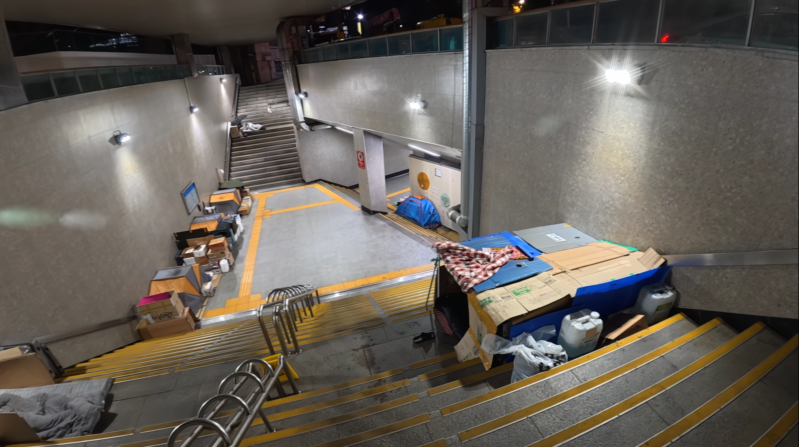
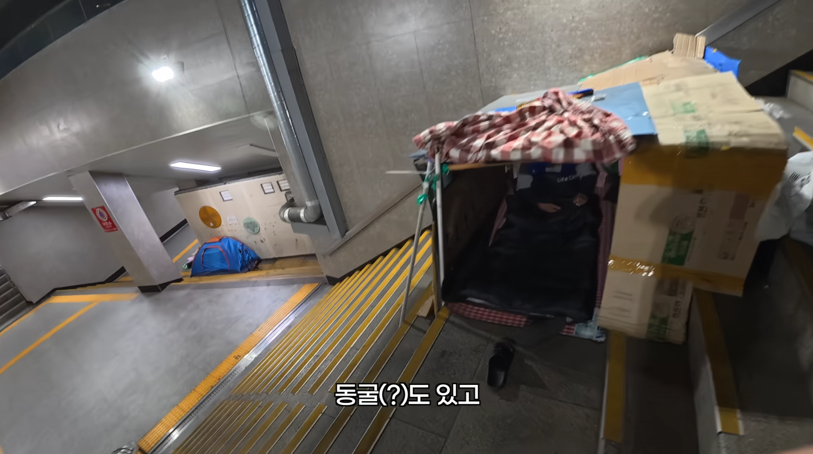
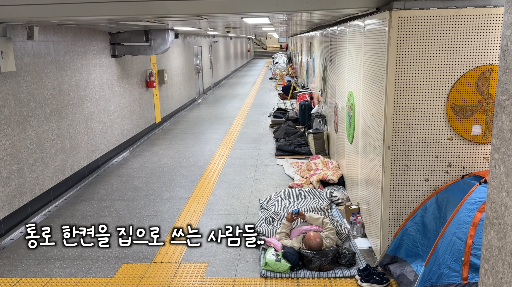
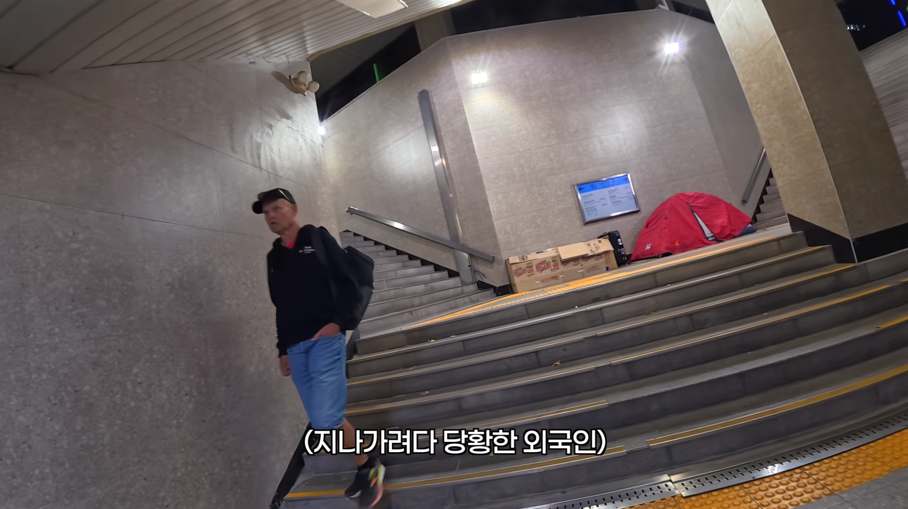
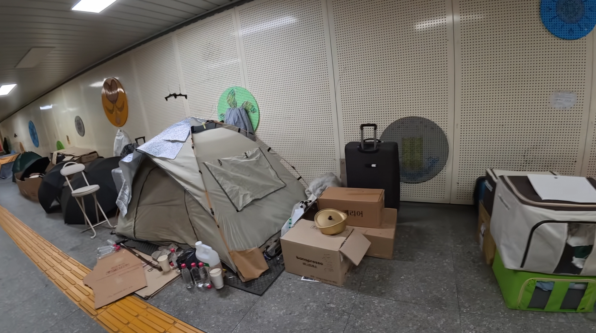
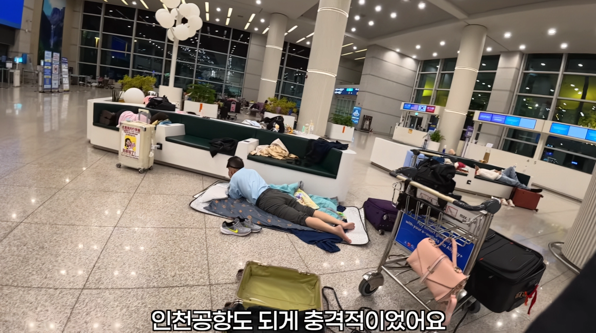
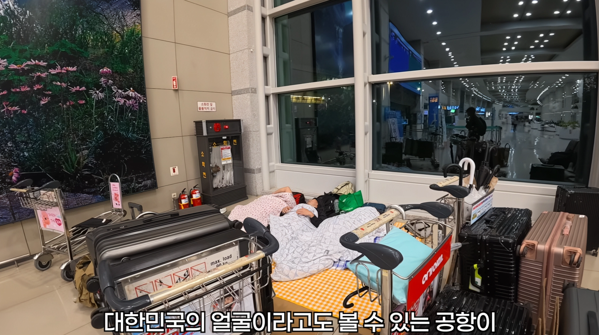

영상보니 노숙자 바글바글 천국
K 환상에 방문한 외국인들 경악하노 ㅋㅋ
미디어 선전과 달리 나라현실 이면은 개씹창났네







영상보니 노숙자 바글바글 천국
K 환상에 방문한 외국인들 경악하노 ㅋㅋ
미디어 선전과 달리 나라현실 이면은 개씹창났네
춘식일이삼사오육
2터미널에는 잘 안보이는거같던데 1터만 저러나?
왜 안쫓아내지;
별로 사람새끼같지 않지만 아무튼 인권이있어서 잘못건드리면 귀찮아짐
가장조심해야하는 사람이 잃을거없는 사람임
쫓아냈다가 칼부림 벌이면 그건 또 누가 책임짐?
다른곳 노숙자있는건 이해하겠는데 공항부터 저ㅈㄹ이면 뭐라고 생각하겠나
'이제 좀 선진국 같네'
이나라도 우리나라랑 똑같네 이생각 하겠지
와 노숙자다
??? : 시벌 사람사는데 다 똑같구나
국격
막짤 두장 빼고는 다 서울역 인근 남대문 방향 지하도잖아 근데 뭔 공항이야
저 유튜버 다른 영상에 나오는 스샷임
공항은 맞고, 저러고 자다가 새벽엔 이부자리 개고 짐(캐리어 더미)은 둔다는 듯
외국 공항도 노숙자 많던데
노숙자 이불 존나 깨끗하네 시벌 ㅋㅋ
저것도 선진국 풍경 아님? 다녀보면 노숙자 많더만
내가 서울역을 자주 이용했다! 는 아니지만 그래도 살면서 몇번은 다녔는데 노숙인 정도는 봤어도 저렇게 박스깔고 요새처럼 해놓은건 한번도 본적이 없는데 내가 없는곳만 다닌건가
저기는 남대문 향하는 지하도임
서울역 지하철 연결 통로랑은 분리되어있음
용산쪽 말고 반대쪽으로 가는 지하도 따라 쭉 가면 그쪽에 많음
낮 시간에는 저렇게 안하고 밤에 하던데
광화문역 얼마전까지만 해도 있던데
서울역쪽, 그러니까 지하철 내려서 서울역 가는 방면에는 생각보다 없음. 지하철 서울역에 있는 다른 출구쪽으로 나가면 바글바글한 곳들이 있음
쫓아내야한다 재네덜도 커뮤니티 형성되어있어서
소문 존나남
노숙자 정화 운동 들어가야함 시민단체 일어나면 착한 걔네 전재산 압류해서 비용으로 쓰고
스스로 저 상황에서 탈출하고자 하는 의지가 없는 노숙자놈들은 그냥 폐기처분하는게 사회적으로 이득이지 않냐...볼때마다 혐오스럽네
옛날엔 서울역이더만 이젠 인천공항이야?
서울역도 개많아
구제 해주는척 줍어다가 죽여버리거나
장기만 적출시켜야함
그게 노숙자들의 유일한 쓸모다
게으르고 일 안하면서 남한테 기생하고 피해만 주려는 인간에겐 인권은 없음
솔직히 이게 맞음. ai가 세상을 지배하면 이렇게 할거 같음.
공항 노숙은 많이 하는거 아님? 새벽 6시 비행기 이런거 어떻게 타는데
노숙인들 모아서 주차단속 시키고 돈좀 때주면 안되나 ㅇㅅㅇ
그거 조차 못하는 지체장애인이나 알콜중독자들이 서울역에서 노숙하는거야
진작에 의사소통 되는 사람들은 복지센터 도움으로 벗어났어
사회안전망 없으니 떨어지면 그대로 나가리되는거
누워있는거 대가리 까버리고싶네
옛날처럼 해야지. 교육대 보내서 사람 만들고 일하게 만들어야함. 일하기 싫어서 남들에게 피해끼치는 놈들이니 정화해야지.
거기 끌려갔던 사람들이 다시 여기저기 떠돌다 다시 돌아온게 서울역, 용산역, 영등포역이야
다 잡아다가 시설에 쳐 넣어야함
솔직히 게을러터지고 갱생의지도 없는 인간들이라 시설에 제 발로 가지도 않음
삼청 교육대 부활 ㄷㄷ
싸그리 잡아다가 신안에 투척해라